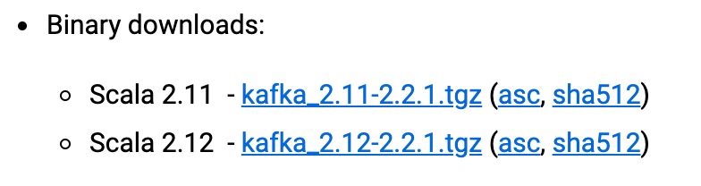

- 00 开篇词 为什么要学习Kafka？.md.html
- 01 消息引擎系统ABC.md.html
- 02 一篇文章带你快速搞定Kafka术语.md.html
- 03 Kafka只是消息引擎系统吗？.md.html
- 04 我应该选择哪种Kafka？.md.html
- 05 聊聊Kafka的版本号.md.html
- 06 Kafka线上集群部署方案怎么做？.md.html
- 07 最最最重要的集群参数配置（上）.md.html
- 08 最最最重要的集群参数配置（下）.md.html
- 09 生产者消息分区机制原理剖析.md.html
- 10 生产者压缩算法面面观.md.html
- 11 无消息丢失配置怎么实现？.md.html
- 12 客户端都有哪些不常见但是很高级的功能？.md.html
- 13 Java生产者是如何管理TCP连接的？.md.html
- 14 幂等生产者和事务生产者是一回事吗？.md.html
- 15 消费者组到底是什么？.md.html
- 16 揭开神秘的“位移主题”面纱.md.html
- 17 消费者组重平衡能避免吗？.md.html
- 18 Kafka中位移提交那些事儿.md.html
- 19 CommitFailedException异常怎么处理？.md.html
- 20 多线程开发消费者实例.md.html
- 21 Java 消费者是如何管理TCP连接的.md.html
- 22 消费者组消费进度监控都怎么实现？.md.html
- 23 Kafka副本机制详解.md.html
- 24 请求是怎么被处理的？.md.html
- 25 消费者组重平衡全流程解析.md.html
- 26 你一定不能错过的Kafka控制器.md.html
- 27 关于高水位和Leader Epoch的讨论.md.html
- 28 主题管理知多少.md.html
- 29 Kafka动态配置了解下？.md.html
- 30 怎么重设消费者组位移？.md.html
- 31 常见工具脚本大汇总.md.html
- 32 KafkaAdminClient：Kafka的运维利器.md.html
- 33 Kafka认证机制用哪家？.md.html
- 34 云环境下的授权该怎么做？.md.html
- 35 跨集群备份解决方案MirrorMaker.md.html
- 36 你应该怎么监控Kafka？.md.html
- 37 主流的Kafka监控框架.md.html
- 38 调优Kafka，你做到了吗？.md.html
- 39 从0搭建基于Kafka的企业级实时日志流处理平台.md.html
- 40 Kafka Streams与其他流处理平台的差异在哪里？.md.html
- 41 Kafka Streams DSL开发实例.md.html
- 42 Kafka Streams在金融领域的应用.md.html
- 加餐 搭建开发环境、阅读源码方法、经典学习资料大揭秘.md.html
- 结束语 以梦为马，莫负韶华！.md.html
05 聊聊Kafka的版本号
你好，我是胡夕。今天我想和你聊聊如何选择 Kafka 版本号这个话题。今天要讨论的内容实在是太重要了，我觉得它甚至是你日后能否用好 Kafka 的关键。
上一期我介绍了目前流行的几种 Kafka 发行版，其实不论是哪种 Kafka，本质上都内嵌了最核心的 Apache Kafka，也就是社区版 Kafka，那今天我们就来说说 Apache Kafka 版本号的问题。在开始之前，我想强调一下后面出现的所有“版本”这个词均表示 Kafka 具体的版本号，而非上一篇中的 Kafka 种类，这一点切记切记！
那么现在你可能会有这样的疑问：我为什么需要关心版本号的问题呢？直接使用最新版本不就好了吗？当然了，这的确是一种有效的选择版本的策略，但我想强调的是这种策略并非在任何场景下都适用。如果你不了解各个版本之间的差异和功能变化，你怎么能够准确地评判某 Kafka 版本是不是满足你的业务需求呢？因此在深入学习 Kafka 之前，花些时间搞明白版本演进，实际上是非常划算的一件事。
Kafka 版本命名
当前 Apache Kafka 已经迭代到 2.2 版本，社区正在为 2.3.0 发版日期进行投票，相信 2.3.0 也会马上发布。但是稍微有些令人吃惊的是，很多人对于 Kafka 的版本命名理解存在歧义。比如我们在官网上下载 Kafka 时，会看到这样的版本：

于是有些同学就会纳闷，难道 Kafka 版本号不是 2.11 或 2.12 吗？其实不然，前面的版本号是编译 Kafka 源代码的 Scala 编译器版本。Kafka 服务器端的代码完全由 Scala 语言编写，Scala 同时支持面向对象编程和函数式编程，用 Scala 写成的源代码编译之后也是普通的“.class”文件，因此我们说 Scala 是 JVM 系的语言，它的很多设计思想都是为人称道的。
事实上目前 Java 新推出的很多功能都是在不断向 Scala 语言靠近罢了，比如 Lambda 表达式、函数式接口、val 变量等。一个有意思的事情是，Kafka 新版客户端代码完全由 Java 语言编写，于是有些人展开了“Java VS Scala”的大讨论，并从语言特性的角度尝试分析 Kafka 社区为什么放弃 Scala 转而使用 Java 重写客户端代码。其实事情远没有那么复杂，仅仅是因为社区来了一批 Java 程序员而已，而以前老的 Scala 程序员隐退罢了。可能有点跑题了，但不管怎样我依然建议你有空去学学 Scala 语言。
回到刚才的版本号讨论。现在你应该知道了对于 kafka-2.11-2.1.1 的提法，真正的 Kafka 版本号实际上是 2.1.1。那么这个 2.1.1 又表示什么呢？前面的 2 表示大版本号，即 Major Version；中间的 1 表示小版本号或次版本号，即 Minor Version；最后的 1 表示修订版本号，也就是 Patch 号。Kafka 社区在发布 1.0.0 版本后特意写过一篇文章，宣布 Kafka 版本命名规则正式从 4 位演进到 3 位，比如 0.11.0.0 版本就是 4 位版本号。
坦率说，这里我和社区的意见是有点不同的。在我看来像 0.11.0.0 这样的版本虽然有 4 位版本号，但其实它的大版本是 0.11，而不是 0，所以如果这样来看的话 Kafka 版本号从来都是由 3 个部分构成，即“大版本号 - 小版本号 - Patch 号”。这种视角可以统一所有的 Kafka 版本命名，也方便我们日后的讨论。我们来复习一下，假设碰到的 Kafka 版本是 0.10.2.2，你现在就知道了它的大版本是 0.10，小版本是 2，总共打了两个大的补丁，Patch 号是 2。
Kafka 版本演进
Kafka 目前总共演进了 7 个大版本，分别是 0.7、0.8、0.9、0.10、0.11、1.0 和 2.0，其中的小版本和 Patch 版本很多。哪些版本引入了哪些重大的功能改进？关于这个问题，我建议你最好能做到如数家珍，因为这样不仅令你在和别人交谈 Kafka 时显得很酷，而且如果你要向架构师转型或者已然是架构师，那么这些都是能够帮助你进行技术选型、架构评估的重要依据。
我们先从 0.7 版本说起，实际上也没什么可说的，这是最早开源时的“上古”版本了，以至于我也从来都没有接触过。这个版本只提供了最基础的消息队列功能，甚至连副本机制都没有，我实在想不出有什么理由你要使用这个版本，因此一旦有人向你推荐这个版本，果断走开就好了。
Kafka 从 0.7 时代演进到 0.8 之后正式引入了副本机制，至此 Kafka 成为了一个真正意义上完备的分布式高可靠消息队列解决方案。有了副本备份机制，Kafka 就能够比较好地做到消息无丢失。那时候生产和消费消息使用的还是老版本的客户端 API，所谓的老版本是指当你用它们的 API 开发生产者和消费者应用时，你需要指定 ZooKeeper 的地址而非 Broker 的地址。
如果你现在尚不能理解这两者的区别也没关系，我会在专栏的后续文章中详细介绍它们。老版本客户端有很多的问题，特别是生产者 API，它默认使用同步方式发送消息，可以想见其吞吐量一定不会太高。虽然它也支持异步的方式，但实际场景中可能会造成消息的丢失，因此 0.8.2.0 版本社区引入了新版本 Producer API，即需要指定 Broker 地址的 Producer。
据我所知，国内依然有少部分用户在使用 0.8.1.1、0.8.2 版本。我的建议是尽量使用比较新的版本。如果你不能升级大版本，我也建议你至少要升级到 0.8.2.2 这个版本，因为该版本中老版本消费者 API 是比较稳定的。另外即使你升到了 0.8.2.2，也不要使用新版本 Producer API，此时它的 Bug 还非常多。
时间来到了 2015 年 11 月，社区正式发布了 0.9.0.0 版本。在我看来这是一个重量级的大版本更迭，0.9 大版本增加了基础的安全认证 / 权限功能，同时使用 Java 重写了新版本消费者 API，另外还引入了 Kafka Connect 组件用于实现高性能的数据抽取。如果这么多眼花缭乱的功能你一时无暇顾及，那么我希望你记住这个版本的另一个好处，那就是新版本 Producer API 在这个版本中算比较稳定了。如果你使用 0.9 作为线上环境不妨切换到新版本 Producer，这是此版本一个不太为人所知的优势。但和 0.8.2 引入新 API 问题类似，不要使用新版本 Consumer API，因为 Bug 超多的，绝对用到你崩溃。即使你反馈问题到社区，社区也不会管的，它会无脑地推荐你升级到新版本再试试，因此千万别用 0.9 的新版本 Consumer API。对于国内一些使用比较老的 CDH 的创业公司，鉴于其内嵌的就是 0.9 版本，所以要格外注意这些问题。
0.10.0.0 是里程碑式的大版本，因为该版本引入了 Kafka Streams。从这个版本起，Kafka 正式升级成分布式流处理平台，虽然此时的 Kafka Streams 还基本不能线上部署使用。0.10 大版本包含两个小版本：0.10.1 和 0.10.2，它们的主要功能变更都是在 Kafka Streams 组件上。如果你把 Kafka 用作消息引擎，实际上该版本并没有太多的功能提升。不过在我的印象中自 0.10.2.2 版本起，新版本 Consumer API 算是比较稳定了。如果你依然在使用 0.10 大版本，我强烈建议你至少升级到 0.10.2.2 然后使用新版本 Consumer API。还有个事情不得不提，0.10.2.2 修复了一个可能导致 Producer 性能降低的 Bug。基于性能的缘故你也应该升级到 0.10.2.2。
在 2017 年 6 月，社区发布了 0.11.0.0 版本，引入了两个重量级的功能变更：一个是提供幂等性 Producer API 以及事务（Transaction） API；另一个是对 Kafka 消息格式做了重构。
前一个好像更加吸引眼球一些，毕竟 Producer 实现幂等性以及支持事务都是 Kafka 实现流处理结果正确性的基石。没有它们，Kafka Streams 在做流处理时无法向批处理那样保证结果的正确性。当然同样是由于刚推出，此时的事务 API 有一些 Bug，不算十分稳定。另外事务 API 主要是为 Kafka Streams 应用服务的，实际使用场景中用户利用事务 API 自行编写程序的成功案例并不多见。
第二个重磅改进是消息格式的变化。虽然它对用户是透明的，但是它带来的深远影响将一直持续。因为格式变更引起消息格式转换而导致的性能问题在生产环境中屡见不鲜，所以你一定要谨慎对待 0.11 版本的这个变化。不得不说的是，这个版本中各个大功能组件都变得非常稳定了，国内该版本的用户也很多，应该算是目前最主流的版本之一了。也正是因为这个缘故，社区为 0.11 大版本特意推出了 3 个 Patch 版本，足见它的受欢迎程度。我的建议是，如果你对 1.0 版本是否适用于线上环境依然感到困惑，那么至少将你的环境升级到 0.11.0.3，因为这个版本的消息引擎功能已经非常完善了。
最后我合并说下 1.0 和 2.0 版本吧，因为在我看来这两个大版本主要还是 Kafka Streams 的各种改进，在消息引擎方面并未引入太多的重大功能特性。Kafka Streams 的确在这两个版本有着非常大的变化，也必须承认 Kafka Streams 目前依然还在积极地发展着。如果你是 Kafka Streams 的用户，至少选择 2.0.0 版本吧。
去年 8 月国外出了一本书叫 Kafka Streams in Action（中文版：《Kafka Streams 实战》），它是基于 Kafka Streams 1.0 版本撰写的。最近我用 2.0 版本去运行书中的例子，居然很多都已经无法编译了，足见两个版本变化之大。不过如果你在意的依然是消息引擎，那么这两个大版本都是适合于生产环境的。
最后还有个建议，不论你用的是哪个版本，都请尽量保持服务器端版本和客户端版本一致，否则你将损失很多 Kafka 为你提供的性能优化收益。